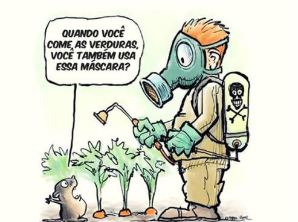

A revolução verde
Conjunto de inovações tecnológicas que visavam melhorar as práticas agrícolas e aumentar a produção de alimentos. Teve origem após a Segunda Guerra Mundial, quando a fome era um problema real em países da África subsaariana e da Ásia meridional.
O mentor da Revolução Verde foi o agrônomo norte-americano Norman Borlaug (1914-2009). Borlaug recebeu o Prêmio Nobel da Paz em 1970, por suas contribuições para redução da fome mundial.
Desafios enfrentados pelas comunidades rurais
As comunidades rurais enfrentam uma miríade de desafios que exercem um impacto direto sobre a qualidade de vida. A desigualdade social e econômica surge como uma questão premente, notadamente devido à concentração de terras nas mãos de poucos, amplificando disparidades socioeconômicas. As mudanças climáticas e suas ramificações ambientais também se configuram como uma fonte significativa de adversidades, afetando de maneira direta a produção agrícola por meio de eventos climáticos extremos, como secas, enchentes e temperaturas anômalas. Paralelamente, a manipulação ambiental representa um desafio adicional, manifestando-se na perda de biodiversidade e na contaminação do solo e da água.
Outro ponto crucial reside na esfera da tecnologia e conectividade, em que a ausência de acesso adequado a recursos tecnológicos e à internet emerge como um obstáculo substancial para a comunicação eficaz, o acesso à informação e o desenvolvimento econômico. A precariedade do sistema educacional em áreas rurais constitui uma limitação significativa, restringindo as oportunidades de aprendizado e progresso. A infraestrutura básica também figura como um desafio premente, com deficiências notáveis na oferta de energia elétrica, saneamento básico e vias de acesso em condições satisfatórias, resultando em impactos adversos na qualidade de vida.
O envelhecimento da população, um fenômeno agravado pela migração dos jovens para centros urbanos em busca de oportunidades de emprego, representa um desafio demográfico adicional para as comunidades rurais. Esses desafios coletivos atuam como obstáculos substanciais para a implementação efetiva de políticas públicas, investimentos em infraestrutura e iniciativas destinadas a fomentar o desenvolvimento sustentável nas comunidades rurais.